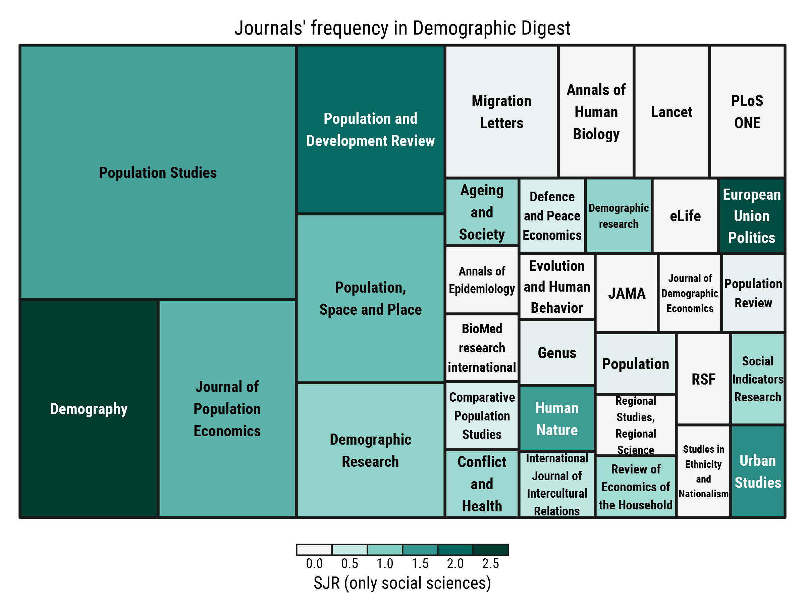

![]()
# load required packages
library(tidyverse)
library(stringr)
library(readxl)
library(extrafont)
myfont <- "Roboto Condensed"
df <- data.frame(lines = readLines("https://ikashnitsky.github.io/share/1702-dd-stats/dd-bib.txt")) %>%
mutate(lines = lines %>% as.character()) %>%
# grab only the lines that contain journals' titles
filter(lines %>% str_detect("journaltitle")) %>%
# remove everything that is not the bare journal's title
transmute(journals = lines %>%
str_replace_all(pattern = "\tjournaltitle = |\\Q{\\E|\\Q}\\E,|\\Q}\\E",
replacement = "")) %>%
# calculate frequencies
group_by(journals) %>%
summarise(n = n())This week, the 30-th issue of my Demographic Digest was published.
Demographic Digest is my project that started in November 2015. Twice a month I select fresh demographic papers and write brief summaries of them in Russian to be published in Demoscope Weekly, the most popular Russian journal/website in social sciences. If you read Russian, you may want to browse the archive or visit the website of the project (which is still to be filled).
The project is in the transitional phase now. Since 2016 Demographic Digest welcomes contributions from from external authors. In February 2017 I launched the first iteration of a project for the students of National Research University Higher School of Economics.
To draw a line after the first phase of the project, I analysed what journals supplied Demographic Digest most frequently. Also, my desire was to try visualizing data with treemaps, which I mentioned in the bonus part1 of the latest digest issue.
1 I finish each issue of Demographic Digest with a bonus, in which I cover fun papers, discuss some academia related issues, or just provide link to cool visualizations and projects.
For that, I exported the bibliographic data of all the papers covered in Demographic Digest. I use Zotero as a reference manager; the paper records are exported as a single .bib file, which I then saved as a plain text (.txt) file. Then I read this data in R, cleaned it, and finally visualized.
For one journal title, Ageing and Society, I failed to replace the “&” using regular expressions. This one is to be fixed manually. I also corrected the title of Lancet journal removing the article “The”. Finally, I corrected the frequencies for Population Studies and Population and Development Review subtracting 6, because for both journals I provided lists of most cited papers as a bonus. Following the same logic, I cleaned the data from the papers that appeared in the bonus part.
# correct "Ageing and Society"
df[1,1] <- "Ageing and Society"
# correct the title of Lancet
df <- df %>% mutate(journals = journals %>% str_replace("The Lancet", "Lancet"))
# correct "Population and Development Review" and "Population Studies" for 6 each
# Reason - top cited papers bonus
df[df$journals %in% c("Population and Development Review", "Population Studies"), 2] <-
df[df$journals %in% c("Population and Development Review", "Population Studies"), 2] - 6To provide some additional metrics of the journals, I downloaded bibliometric data from the SCImago Journal & Country Rank projecthttp://www.scimagojr.com/aboutus.php. Demographic journals usually have rather low SJR, compared to medical journals; that’s why I downloaded the data only for journals in Social Sciences (the.xlsx file). Then I read the data in R and join to my data frame.
# read SJR data for journals in Social Sciences
sjr <- readxl::read_excel("https://ikashnitsky.github.io/share/1702-dd-stats/scimagojr.xlsx", 1) %>%
mutate(id = Title %>% tolower())
# join the data frames; note that I create an "id" variable in lower case
df_sjr <- left_join(df %>% mutate(id = journals %>% tolower), sjr, "id") Finally, it’s time to visualize the data. I use the amazing treemap package2.
2 I also tried portfolio and treemapify, but liked the output from treemap most.
# Treemap visualization
library(treemap)
treemap(dtf = df_sjr,
index = "journals",
vSize = "n",
vColor = "SJR",
type = "value",
n = 5,
palette = "BrBG",
border.col = "grey10",
title = "Journals' frequency in Demographic Digest",
title.legend = "SJR (only social sciences)",
fontfamily.title = myfont,
fontfamily.labels = myfont,
fontfamily.legend = myfont,
drop.unused.levels = T)Here is how the output looks

Note that the lion’s share of Population Studies is mainly explained by the first issue of Demographic Digest, in which I covered all the papers from the brilliant special issue Population — The long view.